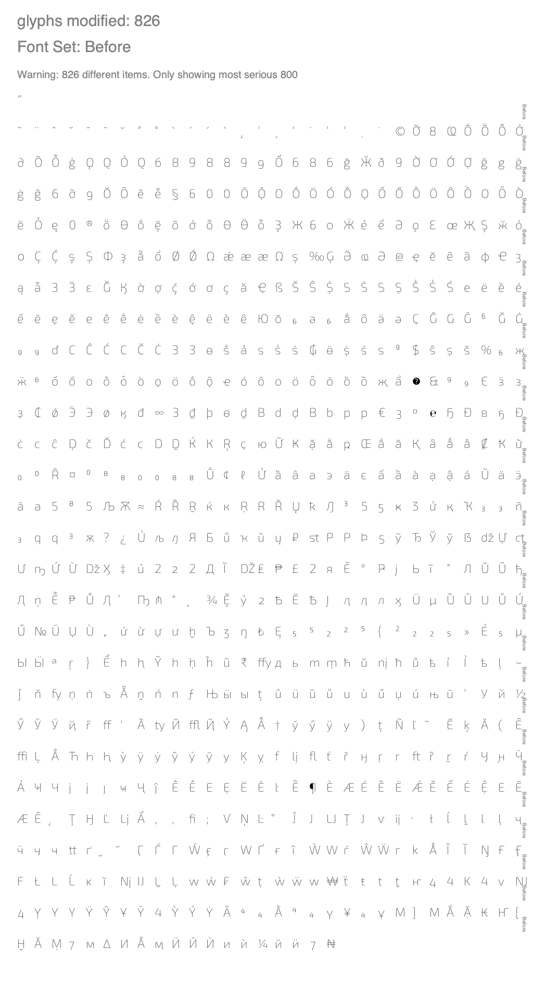
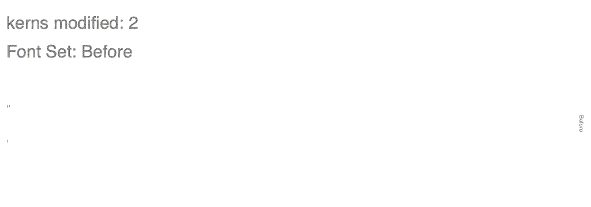
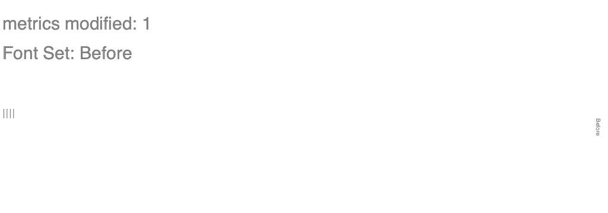
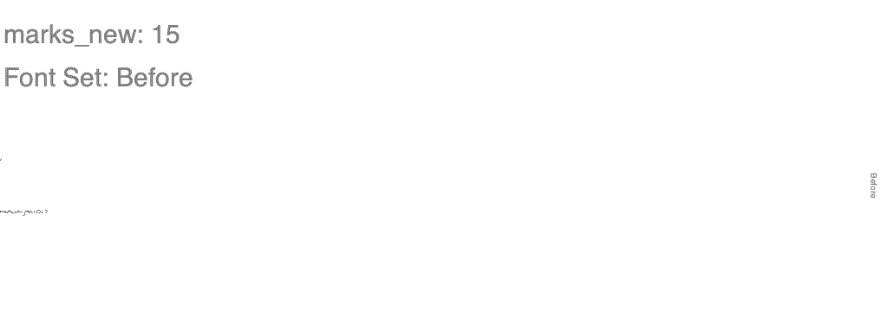
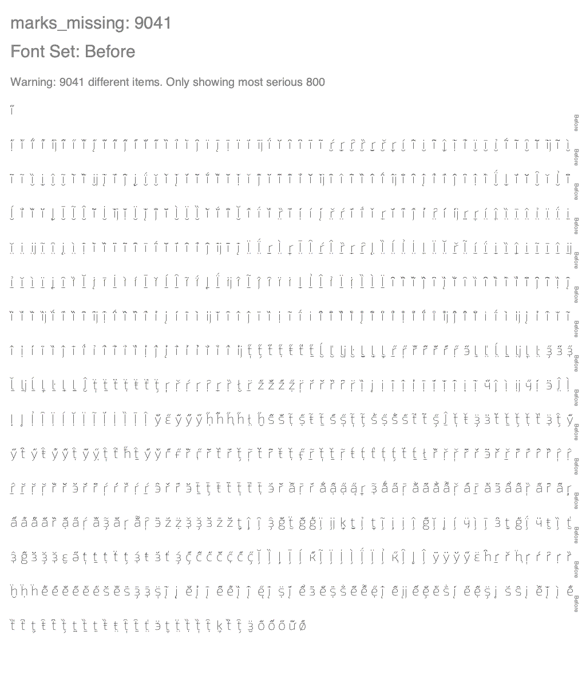

Diffenator
Displaying the 20 most significant items in each table. To increase use the '-ol' flag
names modified: 1
| id | string_a | string_b |
|---|
| (3, 3, 1, 1033) | 1.100;UKWN;Exo2-Thin | 1.100;NONE;Exo2-Thin |
attribs modified: 8
| table | attrib | value_a | value_b |
|---|
| OS/2 | ulUnicodeRange1 | 536871431 | 2684355327 |
| OS/2 | panose | 0-0-3-0-0-0-0-0-0-0 | 0-0-0-0-0-0-0-0-0-0 |
| OS/2 | ulUnicodeRange2 | 1 | 1073750091 |
| gasp | version | 1 | 4 |
| head | yMax | 1006 | 1009 |
| head | xMin | -557 | -373 |
| head | modified | 2019/07/10 09:19:55 | 2019/10/21 22:16:08 |
| head | fontRevision | 1.09999 | 1.1 |
glyphs modified: 826
| glyph | diff | string |
|---|
| hungarumlaut | 0.6392 | ˝ |
| tilde | 0.6305 | ˜ |
| dieresis | 0.6279 | ¨ |
| circumflex | 0.6271 | ˆ |
| caron | 0.6268 | ˇ |
| macron | 0.6238 | ¯ |
| uni02C9 | 0.6238 | ˉ |
| breve | 0.6044 | ˘ |
| uni02BA | 0.5993 | ʺ |
| ring | 0.5676 | ˚ |
| uni02CB | 0.5423 | ˋ |
| acute | 0.5423 | ´ |
| uni02CA | 0.5423 | ˊ |
| grave | 0.5423 | ` |
| ogonek | 0.5306 | ˛ |
| uni02B9 | 0.507 | ʹ |
| cedilla | 0.4921 | ¸ |
| uni02BB | 0.4776 | ʻ |
| dotaccent | 0.4682 | ˙ |
| uni02BF | 0.4516 | ʿ |

kerns modified: 2
| left | right | diff | string |
|---|
| space | quotedblright | -1.0 | ” |
| space | quoteright | -1.0 | ’ |

metrics modified: 1
| glyph | diff_adv |
|---|
| tildemacron | 216.0 |

marks_new: 15
| base_glyph | base_x | base_y | mark_glyph | mark_x | mark_y |
|---|
| oslash.rvrn | 279 | 558 | uni030B | -253 | 554 |
| oslash.rvrn | 279 | 558 | uni0308 | -226 | 557 |
| oslash.rvrn | 279 | 558 | tildecomb | -210 | 561 |
| oslash.rvrn | 279 | 558 | uni030C | -205 | 564 |
| oslash.rvrn | 279 | 558 | uni0302 | -204 | 564 |
| oslash.rvrn | 279 | 558 | uni0306 | -213 | 554 |
| oslash.rvrn | 279 | 558 | acutecomb | -212 | 554 |
| oslash.rvrn | 279 | 558 | uni0304 | -200 | 561 |
| oslash.rvrn | 279 | 558 | uni031B | -191 | 561 |
| oslash.rvrn | 279 | 558 | uni0311 | -192 | 554 |
| oslash.rvrn | 279 | 558 | uni030F | -192 | 554 |
| oslash.rvrn | 279 | 558 | uni0307 | -183 | 556 |
| oslash.rvrn | 279 | 558 | uni030A | -154 | 564 |
| oslash.rvrn | 279 | 558 | uni0312 | -157 | 556 |
| oslash.rvrn | 279 | 558 | hookabovecomb | -148 | 564 |

marks_missing: 9041
| base_glyph | base_x | base_y | mark_glyph | mark_x | mark_y |
|---|
| idieresis | 109 | 558 | uni030B | -253 | 554 |
| uni1ECB | 109 | 558 | uni030B | -253 | 554 |
| igrave | 109 | 558 | uni030B | -253 | 554 |
| uni1E2F | 109 | 558 | uni030B | -253 | 554 |
| uni1EC9 | 109 | 558 | uni030B | -253 | 554 |
| ij | 109 | 558 | uni030B | -253 | 554 |
| uni020B | 109 | 558 | uni030B | -253 | 554 |
| i.loclTRK | 109 | 558 | uni030B | -253 | 554 |
| uni0209 | 109 | 558 | uni030B | -253 | 554 |
| iogonek | 109 | 558 | uni030B | -253 | 554 |
| itilde | 109 | 558 | uni030B | -253 | 554 |
| icircumflex | 109 | 558 | uni030B | -253 | 554 |
| jcircumflex | 109 | 558 | uni030B | -253 | 554 |
| iacute | 109 | 558 | uni030B | -253 | 554 |
| ibreve | 109 | 558 | uni030B | -253 | 554 |
| imacron | 109 | 558 | uni030B | -253 | 554 |
| uni0209 | 109 | 558 | uni0308 | -226 | 557 |
| uni1EC9 | 109 | 558 | uni0308 | -226 | 557 |
| igrave | 109 | 558 | uni0308 | -226 | 557 |
| jcircumflex | 109 | 558 | uni0308 | -226 | 557 |
